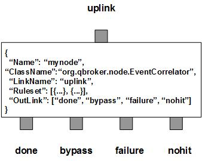

EventCorrelator is a message node that maintains a session for correlations. EventCorrelator converts incoming JMS messages into JMSEvents and correlates them according to their content and the predefined rulesets. All the events are correlated into non-overlapping groups. EventCorrelator then creates a summary event for each of the groups. As the result, EventCorrelator routes all the events into four outlinks: done for the summary events created in the correlations, nohit for those events do not belong to any rulesets, failure for the events failed in the correlation process and bypass for those events participated in correlations. Since EventCorrelator does not consume any events, any in-coming events has to find a way out via one of the four outlinks.
EventCorrelator contains a number of predefined rulesets. These rulesets are used to categorize events into groups. Each rule defines an EventFilter for selecting events and an EventMerger for building a summary event on the group. An event may belong to multiple groups. The correlation process will decide its final ownership based on the size of the groups. The group with the largest size will own all the events in the group exclusively. In case there is a tie between two groups, the group with the lowest rule ID will be the winner. Therefore each ruleset defines a unique event group. The ruleset also defines a summary list for the merger to create a new event and to attach the summary of all the events in the group.
EventCorrelator always creates two extra rulesets. The first one is nohit ruleset for those events not hitting any patterns. The other is candidate ruleset for all incoming events hitting at least one patterns. Since there is no way to figure out the final groupships of candidate events before the correlation, they will be put into candidate group for tracking. Please remember, candidate events may not necessarily contribute to any summary events. The summary events will be counted by their own rulesets. Their property displaying and resetting are mutual-exclusively determined by the DisplayMask and StringProperty of their own rulesets. If DisplayMask is not defined in a rule or it is set to 0 or -1 (default), its StringProperty will be used to reset the string properties on the summary events. Otherwise, its StringProperty will only be used to display the details of summary events. On the node level, DisplayMask and StringProperty control the displaying result of all candidate events. If the DisplayMask of a ruleset is set to -1, that rule will inherit the DisplayMask and the StringProperty from the node for display control on the rule level.
It is OK to have a bypass ruleset without any EventMerger. Any ruleset with PreferredOutLink defined is called bypass ruleset. If a bypass ruleset matches an event, the event will be routed to the specified outlink directly, bypassing rest of the correlation process. It is acting like a jump out of the loop.
You are free to choose any names for the four fixed outlinks. But EventCorrelator always assumes the first outlink for done, the second for bypass group, the third for failure and the last for nohit. Any two or more outlinks can share the same outlink name. It means these outlinks are sharing the same output channel.
Apart from the common properties, there is three implementation specific properties for EventCorrelator.
| Property Name | Data Type | Requirement | Description | Examples |
|---|---|---|---|---|
| Heartbeat | integer | optional | timeout in second for a session | 7200 (default: 86400) |
| SessionTimeout | integer | optional | timeout in second for a session | 7200 (default: 86400) |
| SessionSize | integer | optional | timeout in second for a session | 7200 (default: 86400) |
The correlation operation is executed via the pre-defined rulesets. Therefore, the configuration of the rulesets is critical to the operations of EventCorrelator. Here are complete properties of rulesets for the node of EventCorrelator.
| Property Name | Data Type | Requirement | Description | Examples |
|---|---|---|---|---|
| Name | alphanumeric with no spaces | mandatory | name of the ruleset | event |
| Type | string | mandatory | type of the merger | MessageSummary |
| ClassName | string | mandatory | full class name of implementation for EventMerger | org.qbroker.event.EventSummary |
| MinimumEventCount | integer | mandatory | minimum number of the events | 2 |
| SummaryTemplate | string | mandatory | template to build the summary | see example |
| SummarySubstitution | string | optional | text substitution for the summary | see example |
| SummaryHeader | string | optional | header for the summary | see example |
| SummaryFooter | string | optional | footer for the summary | see example |
| SummaryDefault | string | optional | default value for the summary | see example |
| Aggregation | list | optional | a list of aggregate operations | see example |
| PreferredOutLink | alphanumeric with no spaces | mandatory for bypass only | name of the preferred outlink | bypass |
| FormatterArgument | list | optional | list of post format operations for summary events only | see example |
| EventPattern | list | optional | list of patterns to select events | see example |
| XEventPattern | list | optional | list of patterns to exclude events | see example |
| StringProperty | map | optional | for displaying or resetting properties on the events | see example |
| DisplayMask | integer | optional | mask for loggings | 64 (default: -1) |
{
...
"Aggregation": [{
"FieldName": "body",
"Operation": "append",
"DefaultValue": ""
}],
...
}
Currently, there is only one implementation of EventMerger, EventSummary. Each implementation will have its own configuration parameters. Here is an example of a ruleset for MessageSummary:
{
"Name": "rule_all_mps",
"ClassName": "org.qbroker.event.EventSummary",
"Site": "MIRA",
"Type": "MessageSummary",
"Category": "MPS",
"Description": "event correlations for all MIRA alerts",
"MinimumEventCount": "1",
"SummaryHeader": "Date Priority Name Status Hostname Text\n",
"SummaryTemplate": "##date## ##priority## ##name## ##status## ##hostname## ##text##\n",
"EventPattern": [{
"priority": "^CRIT$",
"site": "^MIRA$",
"hostname": "^mira(app|web)4prod[12]"
}],
"XEventPattern": [{
"status": "^[eE]xception$"
}]
}
where this rule is of MessageSummary for all events from MIRA.
Here is an example of EventCorrelator:
{
"Name": "node_correlation",
"ClassName": "org.qbroker.node.EventCorrelator",
"URI": "event://localhost",
"Operation": "correlate",
"Capacity": "1024",
"LinkName": "bymin",
"Heartbeat": "30",
"SessionSize": "100",
"SessionTimeout": "120",
"XAMode": "1",
"DisplayMask": "6",
"Debug": "1",
"StringProperty": {
"priority": "",
"name": "",
"hostname": "",
"site": "",
"category": ""
},
"Ruleset": [{
"Name": "shortcut",
"PreferredOutLink": "action",
"EventPattern": [{
"priority": "^DEBUG$"
}],
}, "all_ardendo", "all_mps", "all_dam_log", "reset_ardendo"]
"OutLink": [{
"Name": "action",
"Capacity": "1024",
"Partition": "0,768"
}, "action", "action", "action"]
}
where the first rule is for bypass. The rest of them are defined externally.